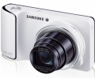

器材
党
全部器材
产品年表
名词百科
榜单
器材库
> 不可换镜头数码相机 > EK-GC100

三星
EK-GC100
4.44
综合评分
分类
不可换镜头数码相机
点评
0 条
图片
0 张
评测
6 篇
EK-GC100搭载最新的 Android 4.1 果冻豆操作系统，支持无线网络连接功能.拥有 21 倍超长变焦镜头和高达 1600 万像素的背照式 CMOS 传感器.
产品类型
不可换镜头数码相机
综合评分
4.44分
无忌评测
全能相机 三星GALAXY Camera试用
规格参数
网友点评
(0)
产品图 / 样片
(0)
评测文章
(6)
该产品没有存档的规格参数
该产品暂无存档的网友点评
该产品暂无存档的产品图
评测 / 相关文章
详细内容
（存档）
全能相机 三星GALAXY Camera试用
（存档）
［资讯］TIPA Award 2013 揭晓
（存档）
［资讯］三星与中国联通共推GALAXY Camera
（存档）
［资讯］三星GALAXY Camera发布会纪实
（存档）
［资讯］智能结合 三星GALAXY Camera开箱图赏
（存档）
相关文章
［资讯］TIPA Award 2013 揭晓
（存档）
［试用］全能相机 三星GALAXY Camera试用
（存档）
［资讯］三星与中国联通共推GALAXY Camera
（存档）
［资讯］三星GALAXY Camera发布会纪实
（存档）
［资讯］智能结合 三星GALAXY Camera开箱图赏
（存档）
［资讯］三星推出智能相机GALAXY Camera
（存档）